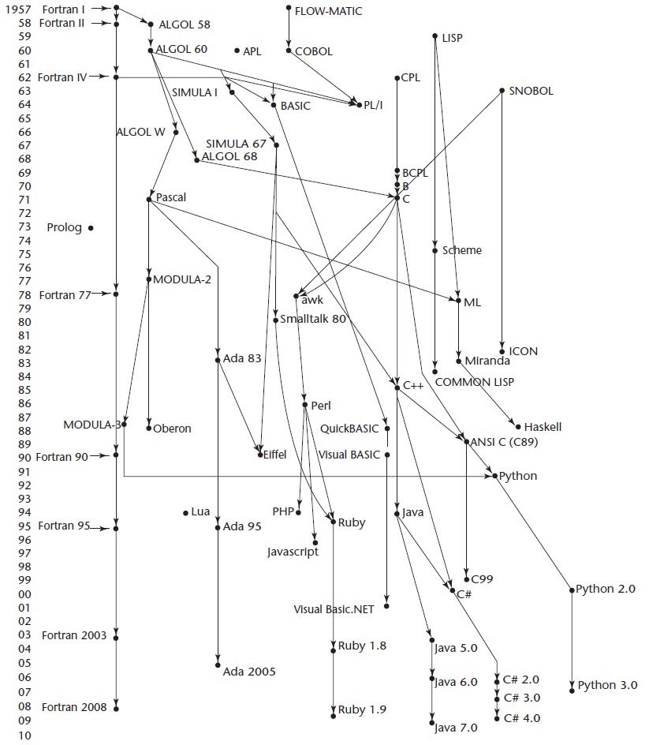
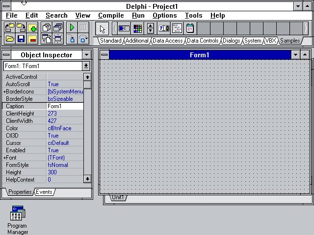
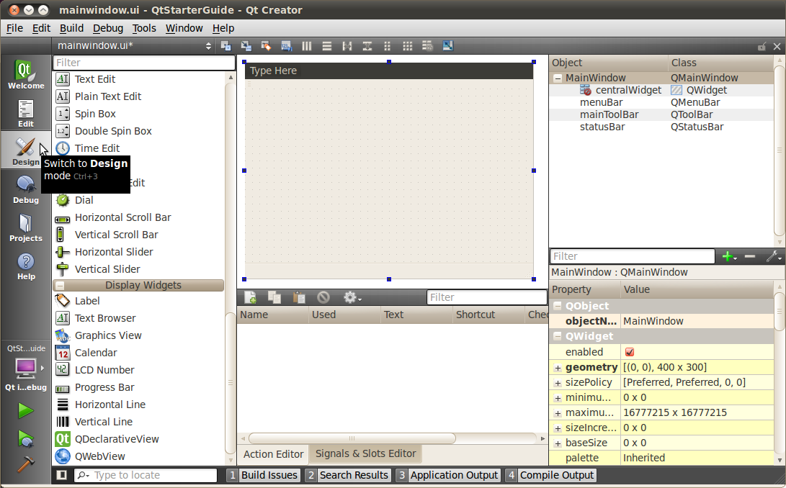
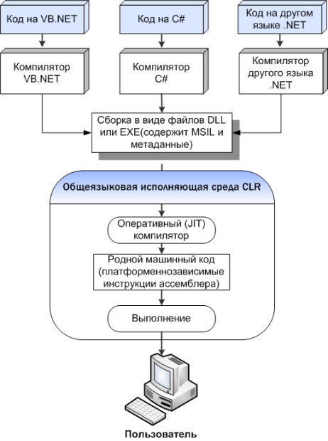

| Тема 5. Языки программирования. | ||||||||||||||||||||||||||||||||||||||||||||||||||||||||
| Назад | ||||||||||||||||||||||||||||||||||||||||||||||||||||||||
|
Язык программирования - формальная знаковая система, предназначенная для записи компьютерных программ. Со времени создания первых программируемых машин человечество придумало более 8000 языков программирования, каждый год их число увеличивается. Профессиональные программисты, как правило, владеют несколькими языками программирования. От естественных языков язык программирования отличается тем, что предназначен для взаимодействия человека с ЭВМ, а не для общения людей между собой. Язык программирования определяет набор правил:
которые задают внешний вид программы и действия, которые выполнит исполнитель под ее управлением. Как правило, язык программирования существует в нескольких, но существенно отличающихся видах:
Например, язык С++ имеет официальный стандарт (ISO/IEC 14882:2014) и различные реализации: GNU C++, Microsoft Visual C++ и др. 1.1.4.1. Машинный кодПервым языком программирования можно считать Машинный код где каждая инструкция выполняет определенное действие:
при этом представляя несколько 0 и 1 в более удобном виде. Любая исполнимая программа состоит из последовательности таких атомарных машинных операций. При исполнении очередной инструкции специальный блок процессора — декодер — транслирует (декодирует) ее в последовательность элементарных операций, понимаемых конкретными исполнительными устройствами. Пример одного из вариантов программы для вывода на экран фразы «Hello, world!» на машинном коде (в шестнадцатеричном и двоичном представлении) приведен в Листинге 1.1.1.
Листинг 1.1.1 -
«Hello, world!»
в машинном коде
(в
шестнадцатеричном
и двоичном
представлении) 74
BB 11 01 B9 0D 00 B4 0E 8A 07 43 CD 10 E2 F9 CD 20 48 65 6C 6C 6F 2C 20 57 6F 72 6C 64 21
10111011 00010001 00000001 10111001 00001101 00000000 10110100 00001110 10001010 00000111
01000011 11001101 00010000 11100010 11111001 11001101 00100000 01001000 01100101 01101100
01101100 01101111 00101100 00100000 01010111 01101111 01110010 01101100 01100100 00100001
1.1.4.2. Языки ассемблераПопытка сделать машинные команды более человекочитаемыми привели к созданию языков ассемблера (1950‑е гг.). Команды языков данного вида как правило один в один соответствуют командам процессора и, фактически, представляют собой удобную символьную форму записи (мнемокод) команд и их аргументов. Код на языке ассемблера в конечном итоге переводится в машинный код, используя специальную программу-преобразователь (транслятор), называемую ассемблером. Программа из Листинга 1.1.1, записанная на языке ассемблера приведена в Листинге 1.1.2.
Листинг 1.1.2 -
«Hello, world!»
на языке
ассемблера 74
Несомненным плюсом языков ассемблера по сегодняшний день является крайне эффективная работа программы (быстрый и компактный код). В то же время поддержка подобной программы крайне трудоемка, код пишется для конкретного устройства, и ее перенос на другие устройства влечет за собой практически полное переписывание, что послужило причиной появления языков высокого уровня. Примечание Сегодня на языках ассемблера пишут программы или их фрагменты в тех случаях, когда критически важны:
Участки кода на языке ассемблера также могут встраиваться в другие языки (например, C++) для оптимизации критичных участков кода. 1.1.4.3. 40-е гг.: первый язык высокого уровняМашинный код и языки ассемблера традиционно относят к языкам низкого уровня - программирование на них осуществляется либо непосредственно в машинных кодах используемого реального или виртуального процессора, либо приближено к этому. В скором времени начинает преобладать идея, что человек должен писать программы на более легком для него языке, чем машинные коды, а трудоемкий перевод в машинный код переложить на другую программу (транслятор), при этом транслятор также должен уметь в какой-либо степени делать перевод на машинный код различных устройств. Данная идея лежит в основе всех современных языков программирования. Языки программирования, которые имеют достаточный уровень абстракции - оперируют сложными структурами данных и умеют выполнять над ними комплексные операции (что в машинном коде повлекло бы длинные и сложные цепочки кода), относят к языкам высокого уровня. Примеры таких языков - C, Pascal, Python, Java и др. В общем случае целью создания новых языков программирования было упрощение написание программ и повышение уровня абстракции (от команд конкретной машины к языку человека). На Рисунке 1.1.21 приведено дерево развития наиболее известных языков программирования по конец 2000-х гг. (рост идет и в настоящий момент). Еще один вариант дерева приведен тут 73.  Рисунок 1.1.21 - Дерево наиболее известных языков программирования высокого уровня 4 Исторически первым спроектированным языком программирования высокого уровня был Планкалкюль (нем. Plankalkül - исчисление планов), созданный немецким инженером Конрадом Цузе в 1943-45 году и впервые опубликованный в 1948 году. Планкалкюль обладал многими возможностями, которыми обладают современные языки, однако, работа в отрыве от других специалистов Европы и США привела к тому, что лишь незначительная часть его работы стала известной, а сама разработка осталась теоретической. Полностью работа Цузе была издана лишь в 1972 году, а первая реализация языка Планкалкюль (для современных компьютеров) была создана в Свободном университете Берлина лишь в 2000 году, через пять лет после смерти Конрада Цузе. 50-е гг.: сфера науки и бизнесаВ 50-е гг. в приоритете остаются задачи научного характера (математика, физика, искусственный интеллект). Программы на языках данного периода представляют собой последовательность команд, которые должен выполнить компьютер. Fortran В период 1954-1957 гг. американским ученым в области информатики Джоном Бэкусом совместно с компанией IBM разрабатывается Fortran (англ. FORmula TRANslator) - первый язык программирования общего назначения применяемый до сих пор (он совершенствуется и вбирает в себя различные нововведения, а последняя версия датируется 2010 г.), существует большое количество написанных на нем программ и библиотек подпрограмм. Пример программы на одном из диалектов Фортрана приведен в Листинге 1.1.3.
Листинг 1.1.3 -
Решение
квадратного
уравнения на
Fortran 77
Lisp В 1958 г. американский информатик Джон Маккарти изобретает язык Lisp (англ. LISt Processing language) - первый язык программирования, который до сих пор является одним из основных средств моделирования различных аспектов искусственного интеллекта. Нововведениями Лиспа являлись:
Пример программы на одном из диалектов Лиспа приведен в Листинге 1.1.4.
Листинг 1.1.4 -
Решение
квадратного
уравнения на
Lisp 77
COBOL В 1959 г. под руководством американской ученой и контр-адмирала флота США Грейс Хоппер создается язык COBOL (англ. COmmon Business Oriented Language), предназначенный, в первую очередь, для разработки бизнес-приложений. Начиная карьеру как программист компьютера Марк I, Хоппер также вошла в историю как:
Кобол - стандартизованный язык практически с момента своего рождения, используемый и сегодня - еще в 2006 году Кобол считался языком программирования, на котором было написано больше всего строк кода. Пример программы на одном из диалектов КОБОЛа приведен в Листинге 1.1.5.
Листинг 1.1.5 -
Простой
калькулятор
(умножение и
сложение) на
COBOL 31
Algol В 1958—1960 гг. появляется Algol (англ. ALGOrithmic Language) - язык, повлиявший практически на все языки следующего десятилетия (Pascal, С и другие). Алгол был популярен в Европе, в том числе в СССР, в то время как сравнимый с ним язык Фортран был распространен в США и Канаде. Алгол является предком довольно большого числа современных языков программирования (от Си и далее). К нововведениям Алгола стоит отнести:
Пример программы на одном из диалектов Алгола (ALGOL 68) приведен в Листинге 1.1.6.
Листинг 1.1.6 -
Решение
квадратного
уравнения на
ALGOL 32
60-70-е гг.: универсальностьС повышением доступности компьютеров (например, в 1964 г. появляется популярная модель IBM 360) и появлением возможности работы в режиме разделения времени (time-sharing), доступ к компьютеру получили не только крупные научно-исследовательские центры, но и предприятия, образовательные учреждения, в том числе учащиеся и специалисты, не являющиеся подготовленными программистами, но нуждающиеся в решении на компьютере своих задач. В связи с этим языки программирования продолжают совершенствоваться. В данный период также появляются основные парадигмы программирования, в рамках которых развиваются языки. PL/I В 1964 г. IBM разрабатывает язык PL/I (англ. Programming Language I), предназначавшийся для научных, инженерных и бизнес-ориентированных вычислений. В это время научные и бухгалтерские программы не только использовали разные компьютеры, но еще и писались на разных языках: научные — на Фортране, бухгалтерские — в основном на Коболе. Целью ПЛ/1 было создание языка, подходящего для обоих типов приложений. Язык ввел в употребление множество нововведений, взятых на вооружение другими языками позже:
Несмотря на заявленные характеристики и мощные возможности, PL/I не добился такого же успеха как Fortran или COBOL в виду сложной и неоптимальной для того времени реализации. Пример программы на PL/I приведен в Листинге 1.1.7.
Листинг 1.1.7 -
Пример программы
на PL/I 4
Basic К 1964 г. появляется язык Basic (англ. Beginner’s All-purpose Symbolic Instruction Code — универсальный код символических инструкций для начинающих), создававшийся как инструмент, основной задачей которого было предоставить студентам-непрограммистам возможность после минимального обучения самостоятельно писать простейшие программы для собственных нужд, чтобы не отвлекать на эту работу специалистов. При этом подразумевалось, что на Бейсике должна быть возможность писать относительно эффективные программы, хоть и без знания принципов аппаратного обеспечения. Несмотря на свою простоту Бейсик завоевал популярность и даже сегодня остается востребованным и используется в различных диалектах, например, в качестве встроенного языка текстового процессора Microsoft Word (VBA), или средства визуального программирования Visual Basic, а также других вариантах. Пример программы на одном из диалектов Бейсика (QuickBASIC 4.5) приведен в Листинге 1.1.8.
Листинг 1.1.8 -
Решение
квадратного
уравнения на
Basic 77
Pascal В 1970 г. известный швейцарский ученый в области информатики Никлаус Вирт создает язык Pascal - один из наиболее известных языков программирования. Основной плюс языка как в то время, так и сейчас - баланс простоты/возможностей и привитие хорошего стиля программирования - до сих пор оставляет его популярным для обучения программированию и использования в ряде коммерческих приложений. Несмотря на угасающую популярность, язык непрерывно развивается: сегодня существует множество диалектов, поддерживающих как визуальное и объектное программирование (Delphi или Lazarus/FreePascal), так и являющихся прямыми «улучшенными» потомками (Modula, Oberon и др.). Пример программы на Паскале приведен в Листинге 1.1.9.
Листинг 1.1.9 -
Решение
квадратного
уравнения на
Pascal 77
Prolog В 1972 г. появляется первый язык логического программирования Prolog, основанный на теории и аппарате математической логики. Пример программы на одном из диалектов Пролога (GNU Prolog) приведен в Листинге 1.1.10.
Листинг 1.1.10 -
Решение
квадратного
уравнения на
Prolog 77
Smalltalk В 1972 г. в научно-исследовательской компании Xerox PARC американский ученый в области теории вычислительных систем Алан Кэй с коллегами разрабатывает первый объектно-ориентированный язык общего назначения Smalltalk. Smalltalk привнес следующие нововведения:
Пример программы на одном из диалектов Smalltalk приведен в Листинге 1.1.11.
Листинг 1.1.11 -
Класс-оценка на
Smalltalk 33
C В период с 1969 по 1973 г. сотрудники американской телекоммуникационной компании Bell Labs Деннис Ритчи и Кен Томпсон разрабатывают язык C - язык общего назначения, изначально предназначенный для реализации операционной системы UNIX. Язык Си уникален с той точки зрения, что именно он стал первым языком высокого уровня, всерьез потеснившим ассемблер в разработке системного программного обеспечения (согласно дизайну языка Си, его конструкции близко сопоставляются типичным машинным инструкциям). Он остается языком, реализованным на максимальном количестве аппаратных платформ, и одним из самых популярных языков программирования, особенно в мире свободного программного обеспечения. Си послужил основой для многих современных языков программирования, в том числе визуальной разработки, а также продолжает развиваться и сам (последний стандарт датируется 2011 г.). Пример программы на Си приведен в Листинге 1.1.12.
Листинг 1.1.12 -
Решение
квадратного
уравнения на C 77
Ada Ada - язык, разрабатываемый в течение 70-х гг. Министерством обороны США с целью разработать единый язык программирования для встроенных систем (бортовых систем управления военными объектами - кораблями, самолетами, танками, ракетами, снарядами и т.п.), функционирующих в режиме реального времени. Синтаксис Ады унаследован от языков типа Algol или Паскаль, но расширен, а также сделан более строгим и логичным. Для удовлетворения требованиям надежности язык построен таким образом, чтобы как можно большее количество ошибок обнаруживалось на этапе компиляции. Кроме того, одним из требований при разработке языка была максимально легкая читаемость текстов программ, даже в ущерб легкости написания. Язык используется в том числе отечественными военными (на нем, например, написана станция документальной связи МО РФ), однако в целом малопопулярен. Пример программы на Ada приведен в Листинге 1.1.13.
Листинг 1.1.13 -
Решение
квадратного
уравнения на Ada 77
80-е гг.: консолидация идей и модульность80-е гг. символизируются консолидацией идей, новые языки пытаются совместить изобретенные ранее парадигмы. Ближе к концу 80-х гг. начинают появляться скриптовые языки (языки, как правило, предназначенные для автоматизации каких-либо действий - быстрого поиска в тексте, автоматизации задач операционной системы и т.д.). При проектировании языков программирования возросло внимание к программированию масштабируемых систем с использованием модулей (модуль - функционально законченный фрагмент программы, который можно использовать в программе). Удобство использования модульной архитектуры заключается в возможности обновления (замены) модуля, без необходимости изменения остальной системы. Дальнейшее развитие получают идеи обобщенного программирования, заключающиеся в таком описании данных и алгоритмов, которое можно применять к различным типам данных, не меняя само это описание. В том или ином виде поддерживается разными языками программирования (до появления данной идеи, например, для сортировки целых чисел и дробных необходимо было записать 2 разные процедуры в виду различия типов). C++ В 1983 г. программист компании Bell Бьерн Страуструп представляет язык C++ - первый язык, совместивший черты высокоуровневого языка (объектно-ориентированного, в частности), и низкоуровнего. C++ широко используется для разработки программного обеспечения, являясь одним из самых популярных языков программирования. Область его применения включает создание операционных систем, разнообразных прикладных программ, драйверов устройств, приложений для встраиваемых систем, высокопроизводительных серверов, а также развлекательных приложений. Имеет компиляторы практически под все популярные платформы и операционные системы. Сегодня также позволяет создавать приложения с графическим интерфейсом (Microsoft Visual C++, С++Qt и др.). Оказав огромное влияние на более современные языки Java и C#, язык постоянно развивается и представляет собой собранную воедино большую массу технологий. Последний стандарт языка, известный как C++14, датируется 2014 г. Пример программы на C++ приведен в Листинге 1.1.14.
Листинг 1.1.14 -
Пример описания
классов
«Транспортное
средство» и его
потомков на C++ 34
Objective-C В то же время 1983 г. в компании Apple под руководством Брэда Кокса разрабатывается собственный Си с классами – Objective-C, построенный на основе языка Си и идей Smalltalk. Имеет графическую оболочку и позволяет создавать приложения с графическим интерфейсом пользователя. При этом язык используется и поддерживается только в продуктах Apple, поэтому не получил такого широкого распространения как C++. Пример программы на Objective-C приведен в Листинге 1.1.15.
Листинг 1.1.15 -
Вычисление
объема с
использованием
классов на
Objective-C 35
Eiffel В 1986 г. французский ученый в области информатики Бертран Мейер создает язык Eiffel (Эйфель) — объектно-ориентированный язык программирования с алголоподобным синтаксисом, в котором впервые был реализован метод контрактного программирования. Метод контрактного программирования предполагает, что проектировщик должен определить формальные, точные и верифицируемые спецификации интерфейсов для компонентов системы. Данные спецификации называются «контрактами» в соответствии с концептуальной метафорой условий и ответственности в гражданско-правовых договорах. Eiffel используется в серьезных разработках, от которых зависят жизни людей: в аэрокосмической отрасли, в банковско-финансовой сфере и др. Несмотря на это язык слабораспространен, т.к. компиляторы с Eiffel от автора языка дороги и не так распространены, как компиляторы C/C++, что, в свое время, и ограничило распространение этого языка, а свободных/бесплатных альтернатив долгое время не было. Пример программы на Eiffel приведен в Листинге 1.1.16.
Листинг 1.1.16 -
Описание класса
«Банковский
счет» на Eiffel 36
Perl Ларри Уолл, лингвист по образованию, в 1987 г. создает язык Perl (англ. Practical Extraction and Report Language - «практический язык для извлечения данных и составления отчетов») - язык программирования общего назначения, который был первоначально создан для манипуляций с текстом, но на данный момент используется для выполнения широкого спектра задач, включая системное администрирование, веб-разработку, сетевое программирование, игры, биоинформатику, разработку графических пользовательских интерфейсов. Язык можно охарактеризовать скорее как практичный (легкость в использовании, эффективность, полнота), чем красивый (элегантность, минималистичность). Пример программы на Perl приведен в Листинге 1.1.17.
Листинг 1.1.17 -
Программа
выполняет замену
в строке на
основе
конфигурационного
файла 37
Tcl В 1988 г. американский ученый в области информатики Джон Оустерхаут создает язык Tcl (англ. Tool Command Language - «командный язык инструментов») - один из первых скриптовых языков высокого уровня. Основная область применения - быстрое прототипирование, создание графических интерфейсов для консольных программ (пакетов программ), встраивание в прикладные программы, тестирование. Также Tcl применяется в веб-разработке. Пример программы на Tcl приведен в Листинге 1.1.18.
Листинг 1.1.18 -
Генерация
простых чисел и
сохранение в
файл на Tcl 38
90-е гг.: Интернет-эпоха90-е годы характеризовались распространением сети Интернет и персональных компьютеров, а также увеличением количества данных, что послужило очередным толчком для дальнейшего развития языков программирования. Многие языки, созданные в это время, являются свободными (пользователи имеют права на неограниченную установку, запуск, свободное использование, изучение, распространение и изменение (совершенствование), а также распространение копий и результатов изменения), что также явилось фактором широкого распространения ряда языков. Можно выделить несколько тенденций и идей развития в это время:
Желание увеличить производительность работы программиста в совокупности с сохранением проверенных временем идей привело к появлению новых языков высокого уровня, а также сред быстрой разработки (англ. Rapid Application Development - RAD), включающих кроме самого языка и транслятора интегрированную среду разработки (англ. Integrated Development Environment - IDE). Все такие языки программирования были объектно-ориентированными, а в ряде случаев IDE также позволяла выполнять графическое проектирование приложений. Python В 1991 г. нидерландский программист Гвидо ван Россум представляет Python — высокоуровневый мультипарадигменный язык программирования общего назначения, ориентированный на повышение производительности разработчика и читаемости кода. Синтаксис ядра Python минималистичен, в то же время стандартная библиотека включает большой объем полезных функций. Python портирован и работает почти на всех известных платформах — от КПК до мейнфреймов. Язык используется в различных качествах: как основной язык программирования или для создания расширений и интеграции приложений. На Python реализовано большое количество проектов, также он активно используется для создания прототипов будущих программ. Python используется в основном в качестве языка веб-программирования, обработки данных и научных задач. Пример программы на Python приведен в Листинге 1.1.19.
Листинг 1.1.19 -
Решение
квадратного
уравнения на
Python 3 39
Ruby Спустя 2 года, в 1993 г., японский разработчик Юкихиро Мацумото создает язык Ruby - высокоуровневый язык программирования для быстрого и удобного объектно-ориентированного программирования, который, по словам автора, более мощный, чем Perl, и более объектно-ориентированный, чем Python. Ruby имеет немало оригинальных решений, редко или вообще не встречающихся в распространенных языках программирования - расширенная работа с массивами, классами и т.д. Основные сферы применения приблизительно такие же, как и у Python. Пример программы на Ruby приведен в Листинге 1.1.20.
Листинг 1.1.20 -
Объявление
класса на Ruby 40
Lua Еще один скриптовый язык программирования Lua в 1993 г. в Бразилии разрабатывает преподаватель университета Роберто Иерусалимский совместно с коллегами. Язык широко используется для создания тиражируемого программного обеспечения (например, на нем написан графический интерфейс пакета Adobe Lightroom). Также получил известность как язык программирования уровней и расширений во многих играх (в том числе World of Warcraft) из-за удобства встраивания, скорости исполнения кода и легкости обучения. Пример программы на Lua приведен в Листинге 1.1.21.
Листинг 1.1.21 -
Решение
квадратного
уравнения на Lua 77
R В 1993 г. также создается R - язык программирования для статистической обработки данных и работы с графикой. R широко используется как программное обеспечение для анализа данных и фактически стал стандартом для статистических программ, имеет собственные IDE. Пример программы на R приведен в Листинге 1.1.22.
Листинг 1.1.22 -
Ведомость оценок
на R 77
JavaScript В 1995 г. набирает популярность язык JavaScript как встраиваемый язык для программного доступа к объектам приложений. Наиболее широко применяется в браузерах как язык сценариев для придания интерактивности веб-страницам. Пример программы на JavaScript приведен в Листинге 1.1.23.
Листинг 1.1.23 -
Пример кода
Javascript на
HTML-странице 41
PHP В 1995 г. появляется PHP (англ. PHP: Hypertext Preprocessor — «PHP: препроцессор гипертекста») — скриптовый язык общего назначения, интенсивно применяемый для разработки веб-приложений. В настоящее время поддерживается подавляющим большинством хостинг-провайдеров и является одним из лидеров среди языков, применяющихся для создания динамических веб-сайтов. Пример программы на PHP приведен в Листинге 1.1.24.
Листинг 1.1.24 -
Пример кода PHP
на HTML-странице
для отправки
почты 42
Java Также в 1995 г. появляется язык Java - язык программирования, разработанный компанией Sun Microsystems (в последующем приобретенной компанией Oracle). Приложения Java обычно транслируются в специальный байт-код, поэтому они могут работать на любой компьютерной архитектуре, с помощью виртуальной Java-машины. Достоинством подобного способа выполнения программ является полная независимость байт-кода от операционной системы и оборудования, что позволяет выполнять Java-приложения на любом устройстве, для которого существует соответствующая виртуальная машина. Другой важной особенностью технологии Java является гибкая система безопасности, в рамках которой исполнение программы полностью контролируется виртуальной машиной - любые операции, которые превышают установленные полномочия программы (например, попытка несанкционированного доступа к данным или соединения с другим компьютером), вызывают немедленное прерывание. Java-технологии используются в огромном количестве устройств (более 3 млрд.), используется как в качестве разработки настольных и мобильных приложений, так и веб-приложений; кроме того, существует множество сред визуальной разработки, поддерживающих язык Java. Пример программы на Java приведен в Листинге 1.1.25.
Листинг 1.1.25 -
Расчет площади
треугольника на
Java 43
GUI Распространенность персональных компьютеров и мобильных устройств привело к необходимости разработки приложений, удобных для использования неподготовленным человеком - для чего необходим был графический интерфейс. Многие из языков данного периода, включая более старые языки, получили возможность создания приложений с графическим интерфейсом. На Рисунке 1.1.22 приведен пример IDE Delphi (Object Pascal), аналогичной средой, но для языка Basic выступал Visual Basic (1991), в качестве одного из вариантов для C++ выступала графическая библиотека Qt (Рисунок 1.1.23).  Рисунок 1.1.22 - IDE Borland Delphi 1 (1995 г.) 70  Рисунок 1.1.23 - IDE Qt Creator 71 2000-е и текущие трендыРазвитие языков продолжилось в 2000-е гг. и идет до сих пор. Некоторые тренды:
Наиболее известные языки данного периода:
C# и .NET Framework В 2000 г. корпорация Майкрософт под руководством Андерса Хейлсберга представляет язык C# - объектно-ориентированный язык программирования для специально созданной платформы Microsoft .NET Framework, основной идеей которой являлось обеспечение свободы разработчика за счет предоставления ему возможности создавать приложения различных типов, способные выполняться на различных типах устройств и в различных средах. Общая схема работы языков в рамках платформы .NET приведена на Рисунке 1.1.24.  Рисунок 1.1.24 - Принцип работы языков платформы .NET 72 C# относится к семье языков с C-подобным синтаксисом, из них его синтаксис наиболее близок к C++ и Java. В языке представлены практически все современные достижения «языкостроения», а реализация языка доступна в том числе на не-Windows средах (проект Mono). Пример программы на C# приведен в Листинге 1.1.26.
Листинг 1.1.26 -
Hello world на
C# (консольное
приложение) 47
Go Go - компилируемый, многопоточный язык программирования, разработанный компанией Google в 2009 г. Первоначальная разработка Go началась в сентябре 2007 года, а его непосредственным проектированием занимались Роберт Гризмер, Роб Пайк и Кен Томпсон. На данный момент его поддержка осуществляется для операционных систем: FreeBSD, OpenBSD, Linux, Mac OS X, Windows, начиная с версии 1.3 в язык Go включена экспериментальная поддержка DragonFly BSD, Plan 9 и Solaris, начиная с версии 1.4 поддержка платформы Android. Язык Go разрабатывался как язык системного программирования для создания высокоэффективных программ, работающих на современных распределенных системах и многоядерных процессорах. Он может рассматриваться как попытка создать замену языку Си. При разработке уделялось особое внимание обеспечению высокоэффективной компиляции. Программы на Go компилируются в машинный код и не требуют для исполнения виртуальной машины. Пример программы на Go приведен в Листинге 1.1.27.
Листинг 1.1.27 -
Цикл for в Go
(единственная
циклическая
конструкция!) 49
Rust Rust (англ. Rust - ржавчина) - мультипарадигменнй компилируемый язык программирования общего назначения, спонсируемый Mozilla Research, поддерживающий функциональное программирование, модель акторов (один из подходов к распараллеливанию программ, где одновременно выполняющиеся процессы передают друг другу сообщения), процедурное программирование, объектно-ориентированное программирование. Rust - системный язык программирования, внимание которого сосредоточено на трех задачах: безопасность, скорость и параллелизм. Он сопоставим по скорости и возможностям с C++, однако, дает большую безопасность при работе с памятью, что обеспечивается механизмами ограничения. Rust также направлен на достижение «абстракции с нулевой стоимостью». После нескольких лет активной разработки первая стабильная версия (1.0) вышла 15 мая 2015 года, после чего новые версии выходят раз в 6 недель. Программы, написанные на ранних стабильных версиях языка будут собираться и на более новых стабильных версиях. Пример программы на Rust приведен в Листинге 1.1.28.
Листинг 1.1.28 -
Вложенные циклы
в Rust 50
|
||||||||||||||||||||||||||||||||||||||||||||||||||||||||
| Конспект подготовлен Бакулиным А. М. 2022 год. | ||||||||||||||||||||||||||||||||||||||||||||||||||||||||